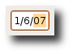
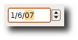
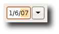
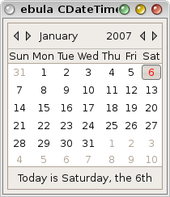
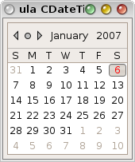
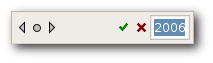
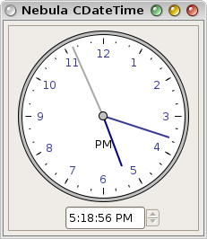
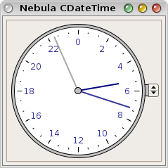
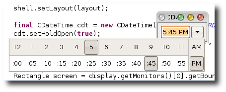
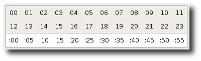

Nebula CDateTime Widget(End-User Operation)
Selection versus 'Full' Selection
A java.util.Date object may encapsulate a moment in time, but specifying it may take several steps as
a user sets each field individually. A java.util.Calendar object is a little closer to what we are used
to using in the real-world, and is therefore closer to how a Date is selected with the CDateTime widget.
Consider how a user may navigate a table with the cursor: selection moves between rows and/or cells
until it reaches the one the user wants to activate, at which point they press (for example) ENTER.
Likewise, a user may navigate past severals dates/times before reaching the one they are really
trying to select. When the user reaches this selection, they will indicate it by what I've called
a 'Full' selection, meaning that every field is being selected.
Different components of the CDateTime
widget consider a 'Full' selection differently simply because users interact with them differently.
A 'Full' selection notifies listeners via the widgetDefaultSelected interface and their occurence will
be pointed out in the following text.
Text Operation
Depending upon the pattern, or format, set on the CDateTime widget, the textual selector allows the user to select any form of date and/or time.
|  |  |  |
| As plain as it gets | ooo, that's exciting | And a button! |
When the CDateTime gains focus by a means other than a mouse click (such as tabbing through
a form), its entire text area is selected. The intent is to allow it to be copied and has the
side affect that no field is actually selected, and thus the CDateTime cannot be
edited. When the CDateTime looses focus, by any means, all fields are unselected and again,
the CDateTime cannot be edited. Before editing, an individual field must be selected.
Field Selection via Mouse:
- Select any field with a direct mouse click
- Clicking the center mouse button will cycle through the fields
Field Selection via Keyboard:
- The left and right arrow keys move one field at time
- If the style TAB_FIELDS is set, then the Tab key will move to the next field (and from the last field to the next widget)
- Typing the first character of the next separation sequence will move to the next field.For example, given the pattern "MM/dd/yy", pressing the '/' key will move to the next field.Likewise, given the pattern "MM'long separation sequence'dd'another long sequence'yy", typing 'l' when on the "MM" field will move to the "dd" field, and then typing 'a' will move to the last field.
- If the user is entering the value of the field via the keyboard and the maximum number of digits for that field have been typed, selection is automatically moved to the next field.
Field Editing via Mouse:
- Scrolling with the mouse wheel will increment and decrement the field
Field Editing via Keyboard:
- The Up and Down arrow keys will increment and decrement the field
- The "+" and "-" keys will increment and decrement the field
- The "=" key will increment the field (i18n problem?)
- Enter the numerical value directly with the keyboard
Note that the text of the field will convert to a 2 digit number (except for year, which will become 4 digits) while being edited. This allows for consistent behavious regardless of the set pattern.
- If the style DROP_DOWN is not set and SPINNER is, then a Spinner widget can be used to increment and decrement the field
Full Selection:
- When the user presses the
ENTERkey (like a normal SWT Text widget)
Null Values:
When the selection is set to null, the text shows a translatable string as shown below.
The biggest problem with a null value in a date/time selector is how go back to an actual value.
This is because it cannot always be done in a single user action and the value of the selection could
be left in an undefined state. CDateTime deals with this by simply holding on to the value of the
selection before it was set to null, and restores it upon any user interaction. This way, there will
be a value which is always valid and can be modified one field at a time; it is also the most relative
value to start from rather than always resetting to the current date/time.
CDateTime displaying a null selection value
Combo Operation
Opening the Drop Shell:
- Mouse - when the drop button is clicked
- Keyboard - when <CTRL-SPACE> key combination is typed
Full Selection:
- When a Full Selection is made on the Graphical component
- When the drop button is clicked
Cancellation:
When the graphical selector is dropped, the current selection is saved.While the user is editing the selection, regular selection events will be fired and the textual selector will be updated to reflect these changes. If the user closes the graphcial selector in a way that does not fire a Full Selection, then this will be interpretted as a cancallation and the selection will be restored to its previous value (this will fire a regular selection so external listeners may be restored as well).
Graphical Operation
Calendar
The user is able to select a date (year, month, and day) by selecting a day on the calendar.
|  |  |
| Standard Calendar | Compact style Calendar |
Navigation via Mouse:
- Clicking the Left and Right Arrows in the upper left increments/decrements the Month
- Clicking the Round Button between the Arrows set the selection to the Current Date
- Clicking the Month Label brings up a Context Menu with all 12 months
- Scrolling the mouse wheel over the Month Label increments/decrements the Month
- Scrolling the mouse wheel over the Year Label increments/decrements the Year
- Scrolling the mouse wheel over the Days scrolls the visible dates by 1 Week
- Alt-Clicking the Days brings up a Context Menu to set selection to the Current Date
Navigation via Keyboard:
- The Left and Right Arrow Keys (on the keyboard) increment/decrement the selected Day
- The Up and Down Arrow Keys (on the keyboard) increment/decrement the selected Week
- The Page UP and Page Down Keys scrolls the visible dates by 4 weeks
- The Home and End Keys scrolls the visible dates by 52 weeks
- Selecting the Year Label switches to Year Edit Mode where the year can be entered via the
keyboard - clicking anywhere other than on the Accept button will cancel the edit (Escape and
Carriage Return work as expected).

The CDateTime Header when editing the Year via Keyboard
Full Selection via Mouse:
- When a day button has the focus and the user presses the
ENTERkey
Full Selection via Keyboard:
- When the user clicks a day button with the primary mouse button
- When the user clicks the "Today" menu option (shown by alt-mouse clicking on a day button)
- When the user clicks the "Today" button with the primary mouse button
Analog Clock
The user is able to select a time (hour, minute, and second) by dragging the hands of the clock with the mouse.
|  |  |
| Digital Readout with Spinner | Compact, 24 Hour style with Spinner |
The user may also set the selection in other ways:
- If the clock is of 12 Hour style, then the AM_PM field may toggled by the button on the dial
- If the SPINNER style was set, then the spinner can be used to increment and decrement the time
- The time can also be incremented and decremented by scrolling the mouse wheel over the dial
- The time can be set current by clicking the "Now" button
Full Selection:
- When the user selects the "Now" menu option (shown by alt-mouse clicking on the clock dial)
- When the user clicks the "Now" button
Discrete Clock

The Discrete Clock (held open for the screen-shot with setHoldOpen(true))

The 24 Hour style (Romanian Locale) Discrete Clock
Full Selection:
- When the button for the last unselected field is selected